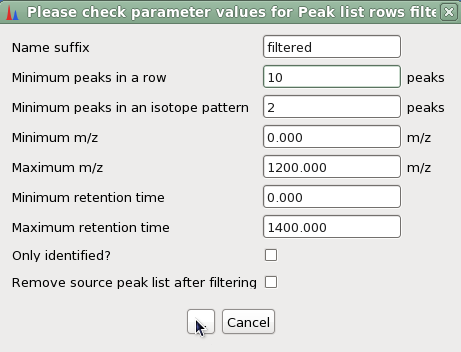

Rows filter
Description
Method parameters
- Name sufix
- This is the suffix to identify the new aligned peak list in Peak list frame of desktop.
- Minimum peaks in a row
- Minimum peaks in an isotope pattern
- Minimum m/z
- Parameter description Parameter description Parameter description Parameter description
- Maximum m/z
- Parameter description Parameter description Parameter description Parameter description
- Minimum retention time
- Parameter description Parameter description Parameter description Parameter description
- Maximum retention time
- Parameter description Parameter description Parameter description Parameter description
- Only identified?
- Parameter description Parameter description Parameter description Parameter description
- Remove source peak list after fitering
- Parameter description Parameter description Parameter description Parameter description
Parameter setup dialog
